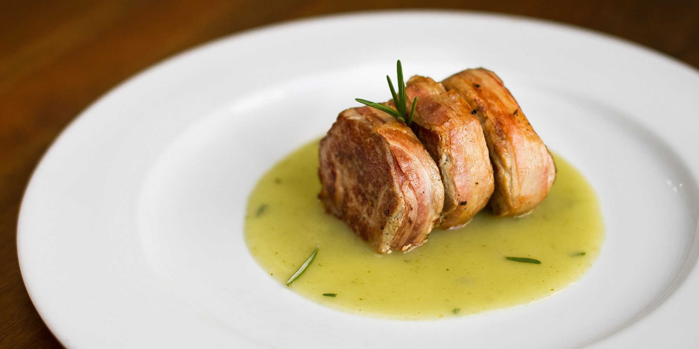

Trattoria · Cucina sarda di terra
Sa Domu Sarda
Nel cuore di Cagliari, i sapori autentici della Sardegna — pasta fatta a mano ogni mattina.
Tradizione di terra
La cucina sarda più autentica, fatta di carni, formaggi e pane carasau.
Fatto a mano ogni giorno
I culurgiones e la pasta fresca nascono in cucina ogni mattina.
Riconosciuti dalla critica
Selezione Michelin e Travellers' Choice, primo ristorante a Cagliari.
La voce di chi ci ha provato
Trattoria · Cucina sarda di terra
Il Menu
Una selezione delle nostre specialità sarde
 Tagliere di Sardegna
Tagliere di Sardegna
Filetto in salsa Tagliata di manzo
Tagliata di manzo Stufato della casa
Stufato della casaUno sguardo ai nostri piatti
Galleria
Tocca un'immagine per ingrandirla
Quello che dicono i nostri ospiti
Recensioni & Riconoscimenti
« Servizio ottimo e cibo ancora di più, soprattutto i culurgiones, fatti la mattina stessa. Personale simpatico e disponibile, arredamento bellissimo. Si paga il giusto, ma ne vale la pena. »
« Eccellente ristorante tipico sardo. Piatti ben curati, servizio veloce, personale professionale e gentile. Cibo ottimo. »
« Atmosfera calda e familiare e una cucina che celebra i sapori della tradizione sarda. Piatti genuini, ingredienti semplici ma di qualità. L'indirizzo perfetto per una cena tipica. »
« Benché isolana, la cucina sarda tradizionale è in prevalenza di terra: qui ne troverete alcuni dei più significativi esempi. »
Guida MichelinSa Domu Sarda — la casa sarda
Chi siamo
« Sa Domu Sarda » significa « la casa sarda »: un invito a entrare in una casa di Cagliari dove la tradizione di terra dell'isola è di casa. Sotto volte in mattoni, in un ambiente caldo e familiare, portiamo in tavola i piatti che raccontano la Sardegna.
La pasta fatta a mano ogni mattina, i formaggi e i salumi del territorio, le carni cotte con pazienza: una cucina semplice ma curata, riconosciuta dalla Selezione Michelin e amata da chi cerca i sapori autentici dell'isola.
Vi aspettiamo nel cuore di Cagliari
Dove siamo & Contatti
09124 Cagliari (CA)
12:30–15:30 · 19:30–23:00